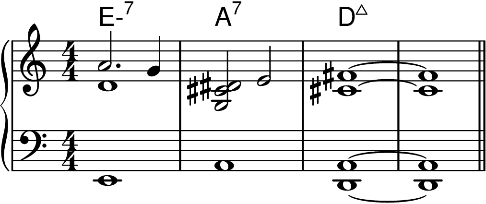
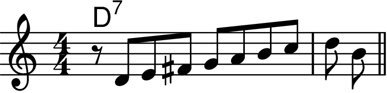
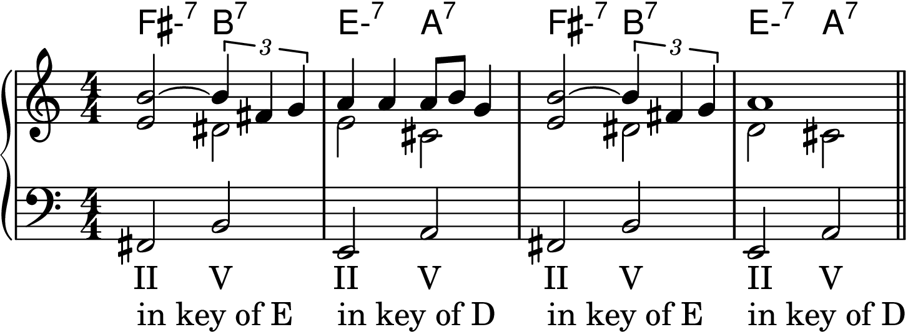
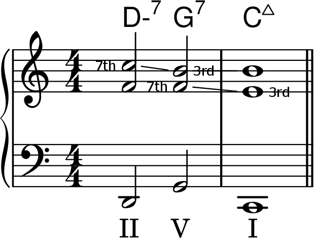
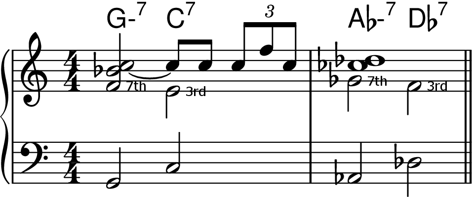
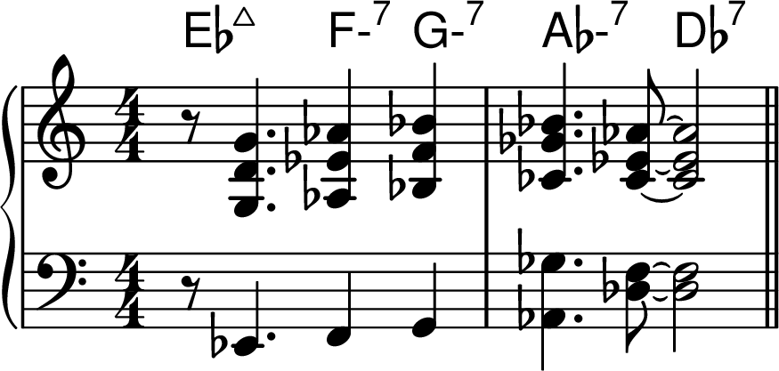
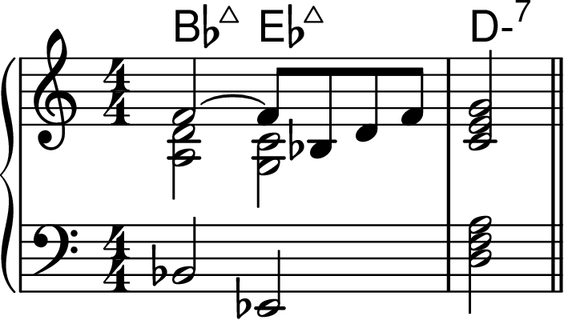
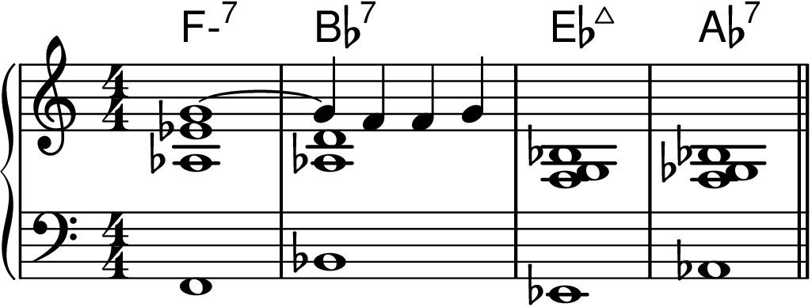
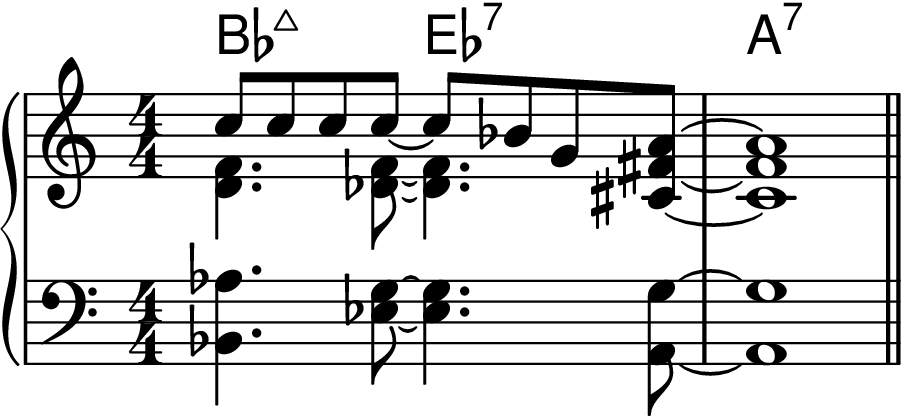
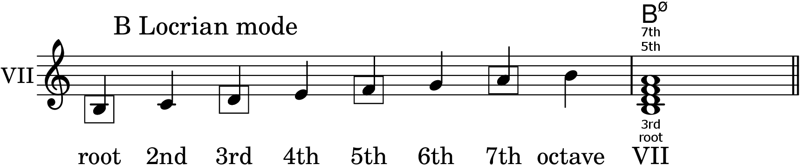

Chapter 2: The Major Scale and the II-V-I Progression
Back to Top
Figure 2-1

Figure 2-2

Figure 2-3

Modes of the Major Scale
Figure 2-4

The Ionian Mode and the Major 7th Chord
Figure 2-5

Figure 2-6

The Dorian Mode and the Minor 7th Chord
Figure 2-7

Figure 2-8

The Mixolydian Mode and the Dominant 7th Chord
Figure 2-9

Figure 2-10

Figure 2-11

Figure 2-12

The II-V-I Progression
Figure 2-13

Figure 2-14

Figure 2-15

Figure 2-16

Voice Leading
Figure 2-17

Figure 2-18

Figure 2-19

The Cycle of Fifths
Figure 2-21

Other Common Chord Progressions
V of V
Figure 2-22

Figure 2-23

I-VI-II-V
Figure 2-24

Figure 2-25

Figure 2-26

III-VI-II-V
Figure 2-27

Figure 2-28

Figure 2-29

Figure 2-30

I-II-III-IV and the Lydian Mode
Figure 2-31

Figure 2-32

Figure 2-33

Figure 2-34

I-IV
Figure 2-35

Figure 2-36

Figure 2-37

The Locrian Mode and the Half-Diminished Chord
Figure 2-38
